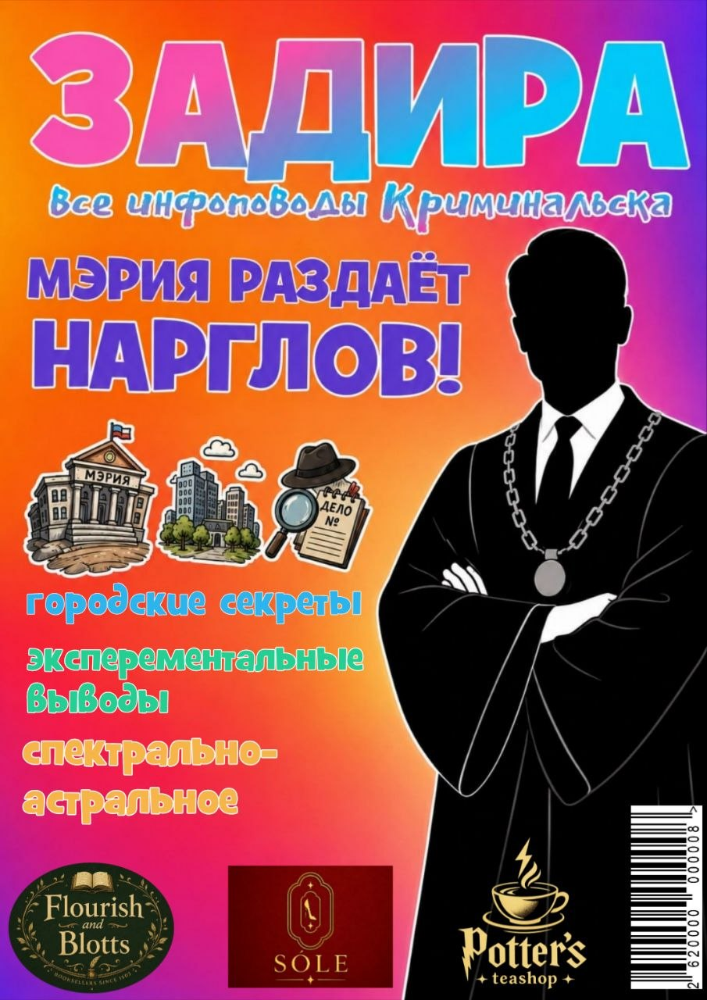

Ошибок: 0

Забрать выпускПривет.
А когда вы начали готовиться страдать? Вам не сказали, что это необходимо? В смысле вам это не нужно?
Вы что не знали, что люди любят страдания?
О, а они любят.
Причем, во всем многообразии.
Мы любим страдать по разным причинам: чтобы оправдать то, что мы ничего не делаем; из-за зависимости от сильных эмоций; чтобы привлечь внимание; в подтверждение глубины личности. В культуре часто романтизируют образ страдальцев, подменяя эмоциональную нестабильность, несдержанность и невоспитанность такими явлениями как искренность, эмпатичность и "большое сердце". Свою роль играют и социально-культурные надстройки: "Бог терпел и нам велел", "без труда не...", "она это выстрадала", "добиться потом и кровью".
Личная драма и тяжёлая жизненная история часто являются пропуском в чужие сердца. Люди чаще поддерживают "не понятых" и "не принятых", героев с тяжёлой судьбой, потому что это заложено в нашей психике. Несчастный воспринимается как более слабый, и его хочется спасти, поддержать. С ними проще всего себя отождествлять и получать дофамин за счёт проявления соучастия: мол, если у него получится, то его победа — и моя победа, я тоже смог. А когда такой герой получает награду, это воспринимается так, будто он "заплатил" за это своими страданиями — ему всё далось нелегко.
Почему это работает? Потому что мы не любим когда кому-то что-то дается просто так. Потому что почему тогда ему, а не, к примеру, вам? Он что, лучше? Ну уж нет.
Истории, происходящие в криминальном регионе, редко когда бывают светлыми, с хорошими концами. Чаще всего они заканчиваются откровенно паршиво, а продолжаются тем, что человек, попав в ловушку сомнительного сюжета становится ещё паршивее.
Мне повезло: я вошла в тот маленький процент героев, чей характер выкован не подъёмом, после провала: в моей жизни вообще провалы были редкими. Моя история в поддержке и в том, что я никогда не была одинока.
Всё началось с моего рождения: любящие родители, целый арсенал из бабушек и дедушек. Может ли начало быть переломным моментом? Я думаю, что да: мало что изменилось с моего рождения и до настоящего момента. По крайней мере в важных для меня сферах.
Второй переломный момент – рождение моей младшей сестры.
Появление лучшего друга. Моей опоры и поддержки, моего вдохновения, моего главного напарника. Я больше никогда не была одна (в хорошем смысле). Она заступится и вдохновит. Она будет поддерживать и говорить, что я лучшая, даже если то, что я натворила ей совсем не нравится. Она заставляет меня чувствовать себя талантливой, живой, умной, значимой и не одинокой.
А потом этих переломных моментов становится больше: первая превосходно-написанная домашка, а потом другая, имеющая все шансы стать тем самым “травматичным опытом” – такая же превосходная, но на один балл хуже. Люди. Которых для того чтобы оставаться такой, какой хочешь и являешься не нужно много: достаточно нескольких человек, чтобы убеждаться в том, что то что ты делаешь нужно хоть кому-то, что ты любима и, опять же, не одна. Ты можешь быть сколько угодно ленивой, истеричной, грустной, самодовольной и дальше по списку проявлений твоего водного знака зодиака
И всё же…
Значит ли отсутствие того самого слома личности то, что я не хочу проявляться, реализовываться, сиять, в конце концов?
Значит ли это, что мой вклад, мой труд менее значим, чем, если бы меня все ненавидели и никто бы не заботился о том, как я себя чувствую?
Большая часть социальной симпатии и поддержки уходит людям с надрывом, со страданием.
Но есть другие, люди без тяжелой судьбы.
Они условно считаются неважными, не интересными. Про них не пишут книг. Их, если и обсуждают, то редко и в негативном ключе, надумав. Фокус вашего объектива на них не наводится и их удел быть вто-ро-сте-пен-ны-ми.
И это ещё пол беды. А вторая половина в том, что они по какой-то странной акции попадают под обесценивание. Потому что если в их жизни нет драмы, значит, им все далось легко, за так. И не важно, что ты, как и другие учишься, трудишься, ищешь, придумываешь. Ты также платишь за каждый успех и каждую неудачу. Своим временем, которое тебе отмерили. Своей жизнью, получается.
И всё же, важно ли это для детектива? Важно ли это для сыщицы? Стали бы рассказывать ту самую историю Эркюль Пуаро или Миро Вульф, мисс Марпл или кот Уинстон?
Выворачивать душу наизнанку сложно. Говорить о “переломных моментах” своей жизни сложно. Соединять все маленькие истории в одну большую, но которая расскажет обо мне всё…
Я журналист и детектив и, если честно, с большей радостью рассказала бы о своих выводах относительно вас.
пропуск, регион, готовиться, соединять, водный, ленивый